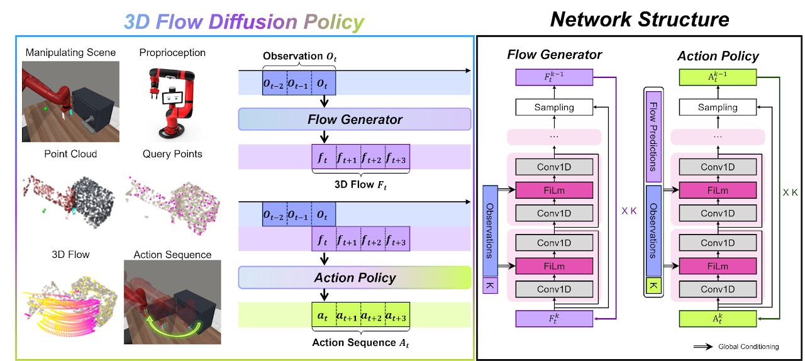
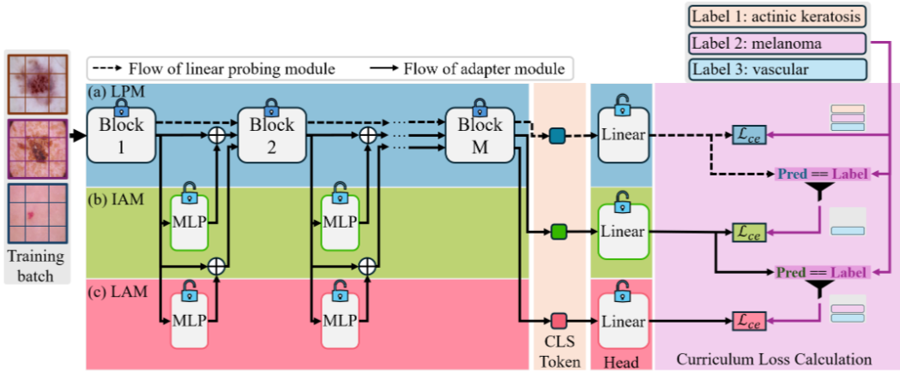
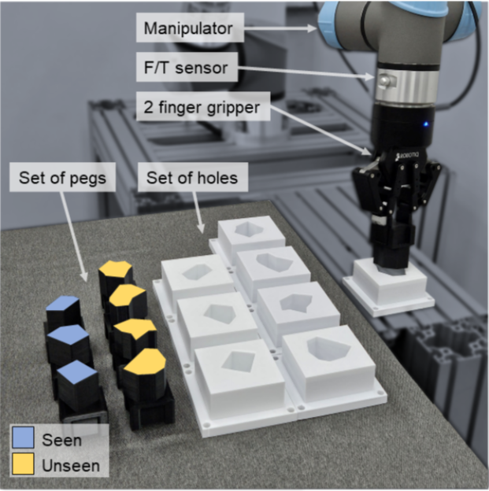

|
Kangmin Kim I'm a Ph.D. student at GIST AI, advised by Professor Kyoobin Lee. My research focuses on robot learning and robotic manipulation across diverse embodiments — including single-arm, dual-arm, and humanoid robots — with particular emphasis on data-driven robot learning, like policy learning and VLA models for manipulation. Recently, I've been focusing on incorporating physics-informed reasoning into manipulation policies such as VLA models, as well as building world (action) models grounded in physics — leveraging simulation data enriched with physical information to better reflect real-world physical dynamics. Email / Google Scholar / Github / LinkedIn |
{kind=link}
Publications |
|
BiGraspFormer: End-to-End Bimanual Grasp Transformer
Kangmin Kim, Seunghyeok Back, Geonhyup Lee, Sangbeom Lee, Sangjun Noh, Kyoobin Lee ICRA 2026 An end-to-end transformer framework for bimanual grasp detection in 3D scenes. |
|
|
 |
3d flow diffusion policy: Visuomotor policy learning via generating flow in 3d space
Sangjun Noh, Dongwoo Nam, Kangmin Kim, Geonhyup Lee, Yeonguk Yu, Raeyoung Kang, Kyoobin Lee preprint A visuomotor policy that learns robot manipulation by generating and following 3D optical flow in space. |

|
High-Quality Unknown Object Instance Segmentation via Quadruple Boundary Error Refinement
Seunghyeok Back, Sangbeom Lee, Kangmin Kim, Joosoon Lee, Sungho Shin, Jemo Maeng, Kyoobin Lee ICRA 2025 A quadruple boundary error refinement method for high-quality segmentation of unknown object instances. |
|
Graspclutter6d: A large-scale real-world dataset for robust perception and grasping in cluttered scenes
Seunghyeok Back, Joosoon Lee, Kangmin Kim, Heeseon Rho, Geonhyup Lee, Raeyoung Kang, Sangbeom Lee, Sangjun Noh, Youngjin Lee, Taeyeop Lee, Kyoobin Lee RA-L 2025 A large-scale real-world dataset for robust object perception and grasping in cluttered environments. |
|
|
 |
Curriculum Fine-tuning of Vision Foundation Model for Medical Image Classification Under Label Noise
Yeonguk Yu, Minhwan Ko, Sungho Shin, Kangmin Kim, Kyoobin Lee NeurIPS 2024 A curriculum fine-tuning strategy for vision foundation models to improve robustness against label noise in medical image classification. |
|
 |
PolyFit: A peg-in-hole assembly framework for unseen polygon shapes via sim-to-real adaptation
Geonhyup Lee, Joosoon Lee, Sangjun Noh, Minhwan Ko, Kangmin Kim, Kyoobin Lee IROS 2024 A sim-to-real adaptation framework for peg-in-hole assembly that generalizes to unseen polygon shapes. |
|
Template from Jon Barron. |